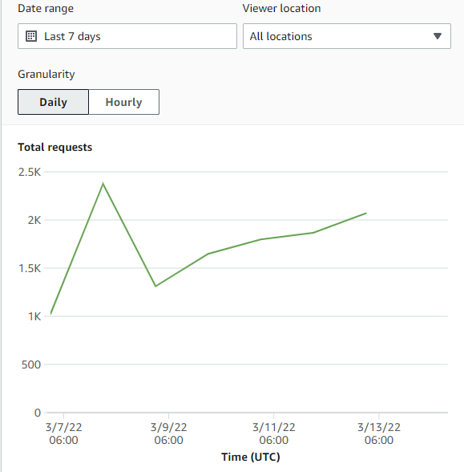
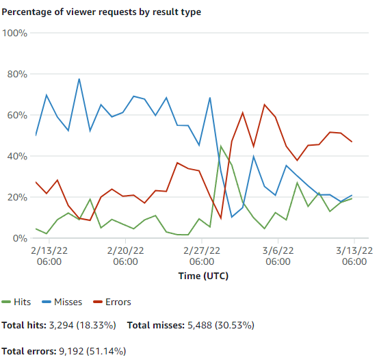
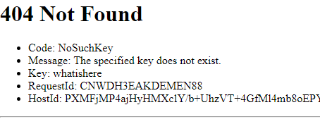
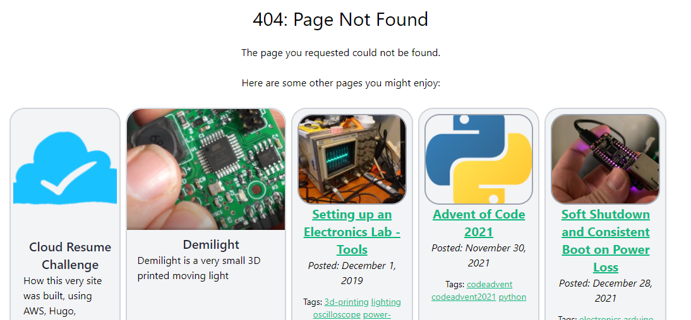

I was digging around in the available statistics for this very site on my Cloudfront Distribution, when I came across an interesting chart.
Wow, almost 2500 hits to my Cloudfront cache on 3/8! My site must be getting so much traffic!
Or is it? Let's dig futher into the cache stats and see what's happening. The next charge on this page shows percentage of viewer requests by result type and... it doesn't look good. Especially if I stretch it out cover the last month.
Well, double dang. Two things that jump out immediately:
That March 2nd date makes some sense - that's when I officially switched over all (most) of my content from my old wordpress site to this hugo-made site. I finalized this while sitting in a convention hall in Baltimore, so I guess it's not 100% surprising that something was left unaccounted for. And I know that there are a couple pieces of content that I haven't ported over at time of writing (specially, links to the Electronics Bash class pages.) But let's see if we can determine exactly what's failing.
The 'Popular Objects' view gives a pretty straightforward view of what users (or scrapers) are looking for. Anything that has only 4xx responses (and/or zero cache hits) is likely to be something that doesn't exist on our site. And if necessary, we can compare this list to the view of the past month (before and after changeover-day) to see what resources are no longer being found.
Wow, almost 2000 requests for /feed in the last week that have gone nowhere. This makes sense - it's a default URL for RSS feeds in a wordpress site. It doesn't look like that's something I broke specifically at my Wordpress transition, but it'd be nice to allow scrapers looking for wordpress sites to actually find my feed, I think. Since the default RSS feed in a Hugo build are at /index.xml, I'd like to add a redirect to make that happen. Unfortunately, it seems like redirects/aliases in Hugo can only create aliases with an html extention, so I'll need to go about this another way.
I was a little worried that I'd hit a dead-end at this point. After all, I'm hosting this static site through S3 specifically to eliminate the need for a webserver, but I assumed I'd need an actual server to create proper 301 redirects. Thankfully, it seems S3 has basic redirect capabilities built in after all. (Update: on later examination this method has some issues - skip to the next Update tag for the new method.)
There are options for redirect rules (up to 50), which can handle redirecting by prefix, postfix, error code, etc, though only 50 rules are allowed per site. Individual objects can also be setup to redirect to other objects, which seems like perhaps what we want in this case.
I'll start by createing a file at /static/feed (no suffix), which will appear on my site at https://jeff.glass/feed, the address I want to redirect. I'll build my site and push it to the GitHub Repo that stores the site's code, where a GitHub action automatically pushes it to my S3 bucket within a couple mintues.
Once the new feed object appears in the S3 bucket, we can pretty easily follow the steps outlined here to create a redirect. We simply edit the objects metadata, add a key of type x-amx-website-redirect-location with a value of the new URL we wish to point to. That key is available in a dropdown, no need to type it.
Now if you go to https://jeff.glass/feed, you (or an RSS reader) will be redirected to /index.xml where the actual RSS feed lives. Pretty slick!
One thing I tested at this point is whether the object will retain its metadata even if the underlying object is changed. I tweaked the text of the /feed object some, rebuilt the site and reuploaded it, and unfortunately the answer is no. However, because the AWS CLI Sync Action which is used under the hood by Jake Jarvis' Github to S3 Sync Action only overwrites new files, so long as we don't modify the static /feed object, that metadata should remain indefinitely.
Update: It seems that some of what I determined about the persistance of the object metadata is not true, and that the metadata is getting wiped whenever I rebuild and re-upload the site. Which is a shame, this would have been a nice clean way to handle this case. Thankfully, we can still use the site Redirection Rules in the Static Site settings of our S3 bucket to redirect from /feed to /index.xml as follows:
[
{
"Condition": {
"KeyPrefixEquals": "feed"
},
"Redirect": {
"ReplaceKeyPrefixWith": "index.xml"
}
}
]
The resource with the next-most 4xx responses is for robots.txt. This is a page that tells crawlers that obey the Robots Exclusion Standard what they are and aren't allowed to crawl on your site. We can generate it in Hugo very simply by adding enableRobotsTXT = true to our config.toml file. We could also add a robots.txt file to our templates folder to override the default Hugo template (which allows everything to be crawled), but I think the default is fine in my case.
xmlrpc.php is apparently a long-outdated way of accessing Wordpress sites remotely. I don't know if it has any legitimate uses anymore, but since my site is in no way Wordpress-ed, I don't need it.
That said, perhaps it would be nice if the site showed something more testful than server-garbge when an inaccessible page was requested.
Hugo has capablities to help us with this too. By adding a layouts/404.html page, we can customize what's shown to the end user when they request a page that can't be found. There are some opinions online, however, that maybe this isn't the best thing to do. But I'm not going to bite off more than I can chew at this point.
To give my 404 page a little more life and interest, I'll have it include cards for 5 pages on the site. While I initially thought these should be random, like the oneoffs on the index page, I think perhaps its better that they represent the best content on the site in a curated way. I can somewhat reuse the "card" layout I built for the index page for this.
I did have to learn a bit more about Hugos range and slice capabilities so I could store the selected pages in an array, rather than inserting them all individually into the template. The final syntax is:
{{< highlight go >}} {{ $pages := slice "/project/demilight" "post/setting-up-an-electronics-lab-tools/" "post/advent-of-code-2021/" "post/quick-dirty-system-power/" }} {{ range $pages }} {{ with $.GetPage . }} {{ .Render "card" }} {{ end }} {{ end }} {{< /highlight >}}Because the Cloud Resume Challenge page is actually a list page, I inserted it manually with some HTML.
Finally, there's a small amount of configuration to be done in the S3 bucket to clarify that 404.html is indeed the error page.
So, that takes care of the assorted wordpress holdovers I no longer need. The only remaining items that are giving 404-responses are a number of links to images of various sizes, all to /wp-content/uploads/. At first I was worried that this was someone hotlinking to these images from outside my domain, but a quick search of my site proved me wrong.
When I ported this blog to Hugo using Python, I missed the fact that, in many posts created on wordpress, images are embedded as thumbnails which link to larger versions of the original image. I failed to remove or update those links, so the images on my site were still linking to the (now dead) wordpress images. Thankfully, a quick regex find-and-replace (<a href=\".+wp-content/uploads/.+>(.+)</a> replaced with $1) cleared up almost all of these instances. One more with irregular formatting was swatted by hand.
And with that, hopefully I've nipped all those pesky 404 responses in bud. I know there are some remaining pages I have left to port over from Wordpress, but since they aren't seeing many hits on Cloudflare, I'm not feeling terribly urgent about them. Besides, the new 404 page makes the response to missing content much cleaner.